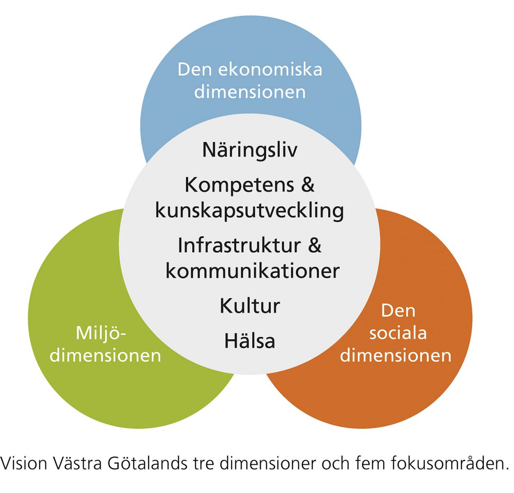

I Västra Götalandsregionens uppdrag ingår ett ansvar för regional utveckling. Vision Västra Götaland är det gemensamma ramverket i arbetet att stärka Västra Götaland som en konkurrenskraftig region, nationellt och internationellt. Grunden i visionen är ”Det goda livet”.
Det står för god hälsa, arbete och utbildning, trygghet, delaktighet i samhällslivet, en god miljö där vi värnar de förnybara systemen, ett rikt kulturliv, samt att vi möter behoven hos barn och ungdomar och arbetar för en uthållig tillväxt.
Det goda livet förutsätter en hållbar utveckling som beaktar de tre dimensionerna – den ekonomiska, den sociala och den miljömässiga dimensionen. Fem fokusområden prioriteras i det arbetet: näringsliv, kompetens, infrastruktur, och kommunikationer, kultur och hälsa. De olika dimensionerna och fokusområdena är sinsemellan beroende och förstärker varandra. I vissa fall kan den redovisade statistiken höra hemma i mer än ett område.
Statistiken i Fakta Västra Götaland är ett komplement till de djupare analyser som regelbundet görs för att följa utvecklingen. God kunskap om utvecklingen är en förutsättning för att kunna bedriva ett utvecklingsarbete som på bästa sätt bidrar till visionen om det goda livet.
Vår förhoppning är att Fakta Västra Götaland ska bidra till ökade kunskaper om, och ett ökat intresse för Västra Götaland.
Göteborg, september 2013
Bertil Törsäter
Regionutvecklingsdirektör
This is just a landing page.
Back